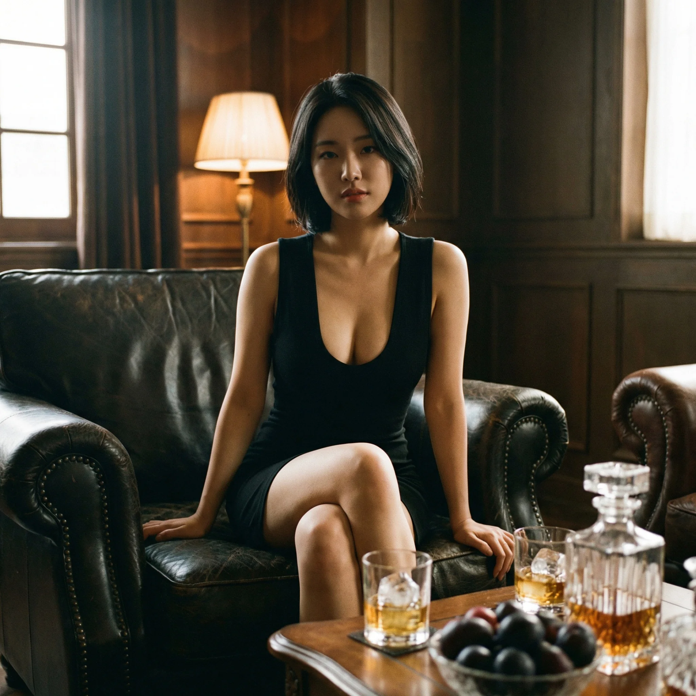

강남 유흥, 제대로 알고 이용하자
강남 유흥은 단순히 '술집'이 아닙니다. 비즈니스 미팅의 연장선이자, 네트워킹의 장이며, 때로는 중요한 의사결정이 이루어지는 공간이기도 합니다. 하지만 강남 유흥 시장은 외부인이 보기에 매우 복잡하고 불투명한 구조로 되어 있습니다. 텐프로, 쩜오, 하이퍼블릭, 퍼블릭, 가라오케 등 업종만 해도 5가지가 넘으며, 각 업종마다 가격대와 서비스 방식, 이용 목적이 완전히 다릅니다.
이 가이드는 15년간 강남 유흥 업계에서 현장 매니저로 근무하며 축적한 경험을 바탕으로 작성되었습니다. 업종별 시스템의 차이점, 실제 이용 고객들의 만족도, 가격 구조의 투명성, 그리고 상황별 최적의 선택지를 객관적으로 분석합니다. 이 글을 끝까지 읽으시면, 여러분은 강남 유흥 생태계를 완벽히 이해하고, 본인의 목적에 맞는 최적의 업소를 선택할 수 있게 될 것입니다.
이 가이드가 필요한 분들:
• 비즈니스 접대를 준비하는 직장인
• 강남 유흥을 처음 이용하는 초심자
• 가성비 좋은 업소를 찾는 실속파
• 업종별 차이점을 명확히 알고 싶은 분
• 바가지 요금 없이 투명하게 이용하고 싶은 분
강남 유흥의 역사와 변천사
강남 유흥의 역사는 1970년대 강남 개발과 함께 시작되었습니다. 당시에는 단순한 술집 형태였으나, 1980년대 중반부터 '룸살롱' 개념이 도입되면서 급격히 고급화되기 시작했습니다. 논현동과 역삼동을 중심으로 대형 룸살롱이 들어서기 시작했고, 이곳은 재계 인사와 정치인들의 사교 공간으로 자리잡았습니다.
1990년대는 '버블 경제'의 전성기였습니다. 이 시기 강남 유흥은 최고의 전성기를 맞이했으며, 일본식 서비스 시스템이 본격적으로 도입되었습니다. 마담과 웨이터로 구성된 전문 인력 시스템, 고가의 양주와 안주, 그리고 VIP 고객 전용 시스템이 정착된 것도 이 시기입니다. 당시에는 한 자리에 수백만 원이 드는 것이 일반적이었고, 이는 부와 지위의 상징으로 여겨졌습니다.
2000년대 들어 시장은 세분화되기 시작했습니다. 최고급 텐프로 룸살롱과 대중적인 퍼블릭 룸살롱으로 계급이 나뉘었고, 가격대와 서비스 수준도 명확히 구분되었습니다. 2010년 이후에는 '하이퍼블릭'이라는 중간 업종이 등장하면서, 시장은 더욱 다양화되었습니다. 또한 1인 고객을 위한 '텐카페', 가성비를 중시하는 '가라오케' 등 새로운 형태의 업소들이 생겨났습니다.
2020년대 현재, 강남 유흥은 가장 세분화되고 전문화된 형태를 보이고 있습니다. 코로나19 팬데믹을 거치며 일부 업소는 폐업했지만, 살아남은 업소들은 더욱 철저한 위생 관리와 고급화 전략으로 경쟁력을 강화했습니다. 특히 젊은 세대의 유입으로 인해 SNS 마케팅, 투명한 가격 공개, 1인 고객 케어 등 새로운 트렌드가 자리잡고 있습니다.
강남 유흥 업종 계급도 개요
강남 유흥 업소는 크게 6개 계급으로 나뉩니다. 이 계급은 단순히 가격만을 기준으로 하는 것이 아니라, 서비스 방식, 타겟 고객층, 인테리어 수준, 직원의 전문성 등 종합적인 요소로 결정됩니다. 각 계급은 명확한 경계를 가지고 있으며, 한 업소가 여러 계급에 걸쳐 있는 경우는 거의 없습니다.
계급 피라미드 구조
1등급 - 텐프로 (Top Class): 강남 유흥의 정점입니다. 청담동과 논현동 일대에 위치하며, 1인당 평균 50만~100만 원 이상의 고가 업소입니다. 재계 인사, 연예인, 외국인 바이어 접대 등 최상위층이 이용합니다. 완벽한 프라이버시 보장과 최고급 서비스가 특징입니다.
2등급 - 쩜오 (Premium): 텐프로 다음 가는 고급 업소입니다. 1인당 평균 30만~50만 원대이며, 역삼동과 선릉역 인근에 주로 분포합니다. 법인 카드를 사용하는 비즈니스 접대용으로 많이 이용되며, 영수증 처리가 가능한 곳이 많습니다.
3등급 - 하이퍼블릭 (High-Public): 쩼오와 퍼블릭의 중간 형태입니다. 1인당 평균 20만~30만 원대로, 가성비가 좋은 편입니다. 초이스 시스템은 있지만 텐프로나 쩜오보다는 캐주얼한 분위기입니다. 직장인 모임이나 중소기업 접대용으로 인기가 많습니다.
4등급 - 퍼블릭 룸살롱 (Public): 가장 대중적인 업종입니다. 1인당 평균 15만~20만 원대로, 가격 대비 만족도가 높습니다. 초이스 시스템이 간소화되어 있으며, 편안한 분위기에서 술과 대화를 즐길 수 있습니다. 친구 모임이나 소규모 회식에 적합합니다.
5등급 - 가라오케 (Karaoke): 노래를 중심으로 한 엔터테인먼트 공간입니다. 1인당 평균 10만~15만 원대로, 강남 유흥 중 가장 저렴한 축에 속합니다. 룸살롱보다는 가볍고 활기찬 분위기이며, 20~30대 젊은 층이 주로 이용합니다.
6등급 - 셔츠룸 & 텐카페: 1인 고객 전용 또는 소규모 모임에 특화된 업소입니다. 가격은 업소마다 천차만별이지만, 평균적으로 1인당 10만~20만 원 선입니다. 혼자 방문해도 부담 없는 시스템으로 운영됩니다.
계급 선택의 기준:
• 예산: 가장 중요한 요소입니다. 1인당 지출 가능 금액을 먼저 정하세요.
• 목적: 비즈니스인가, 친목인가에 따라 선택이 달라집니다.
• 인원: 2명이면 텐프로나 쩜오, 4명 이상이면 퍼블릭이나 가라오케가 유리합니다.
• 분위기: 격식 있는 자리인가, 편한 자리인가를 고려하세요.
텐프로 (Top Class) 완전 분석
텐프로는 'Top of the Top'을 의미하는 강남 유흥의 최정상급 업소입니다. 주로 청담동과 논현동 뒷골목에 위치하며, 외관상으로는 일반 빌딩과 구분이 어려울 정도로 은밀하게 운영됩니다. 입구조차 찾기 어려운 경우가 많으며, 대부분 회원제 또는 소개제로 운영되기 때문에 처음 방문하는 고객은 기존 단골의 추천이 필수적입니다.
가격 구조
텐프로의 기본 요금은 업소마다 다르지만, 일반적으로 2시간 기본 세트(양주 1병 기준)가 200만~400만 원 선입니다. 여기에 인원수에 따라 추가 요금이 붙으며, 1인당 환산 시 50만~100만 원 이상이 됩니다. 양주는 대부분 프리미엄 브랜드(로얄살루트 21년산, 발렌타인 30년산 등)만 취급하며, 안주도 고급 일식이나 한정식 수준으로 제공됩니다.
추가 비용도 만만치 않습니다. 시간 연장 시 시간당 50만~100만 원, 웨이터 팁은 기본 30만~50만 원, 마담 팁은 별도로 50만 원 이상이 관례입니다. 발렛파킹, 대리운전 등 부대 비용까지 포함하면 한 자리에 500만~1,000만 원이 드는 경우도 흔합니다. 따라서 법인카드나 접대비 명목으로 이용하는 경우가 대부분이며, 개인 지갑으로는 부담스러운 수준입니다.
서비스 특징
텐프로의 서비스는 '완벽함' 그 자체입니다. 예약 전화를 걸면 전담 마담이 배정되며, 고객의 취향, 예산, 목적 등을 사전에 파악합니다. 방문 당일에는 전용 발렛파킹 서비스가 제공되고, VIP 엘리베이터를 통해 룸으로 직행합니다. 룸은 대부분 20평 이상의 초대형 공간으로, 고급 가구와 음향 시스템을 갖추고 있습니다.
초이스 시스템은 매우 신중하게 진행됩니다. 마담이 고객의 취향을 먼저 파악한 후, 3~5명의 여성을 엄선하여 소개합니다. 고객은 이 중 마음에 드는 사람을 선택하며, 만약 마음에 들지 않으면 재초이스가 가능합니다(단, 무제한은 아니며 보통 2~3회로 제한). 선택된 여성은 고객 옆에 앉아 대화 상대가 되어주며, 술을 따르고 안주를 챙기는 등의 서비스를 제공합니다.
텐프로의 가장 큰 특징은 '프라이버시 보장'입니다. 유명 인사나 재계 거물들이 자주 이용하기 때문에, 보안이 철저합니다. 핸드폰 카메라는 입장 시 스티커로 봉인되며, 룸 내부는 완전 방음 처리되어 있습니다. 직원들은 고객의 신원이나 방문 사실을 절대 외부에 누설하지 않으며, 이를 위반하면 즉시 해고됩니다. 또한 법인카드 영수증 처리도 '식사비' 또는 '컨설팅비' 등으로 처리되어, 회계 처리에 문제가 없도록 배려합니다.
이용 시 주의사항
텐프로는 기본적으로 '단골 위주'로 운영됩니다. 처음 방문하는 고객은 기존 단골의 소개가 없으면 예약조차 어려운 경우가 많습니다. 또한 최소 인원 제한이 있는 경우가 많아(보통 3~4명 이상), 1~2명의 소규모 방문은 거절당할 수 있습니다. 예약 시 반드시 예산과 목적을 명확히 전달해야 하며, 막연히 "제일 좋은 걸로"라고 하면 예상을 훨씬 초과하는 요금이 청구될 수 있습니다.
쩜오 시스템 완전 분석
쩜오는 '5.0'이라는 뜻으로, 5점 만점에 5점을 주겠다는 의미에서 유래한 업종명입니다. 텐프로 다음 가는 고급 업소이지만, 텐프로보다는 접근성이 좋고 가격도 상대적으로 합리적입니다. 역삼동 테헤란로 인근과 선릉역 주변에 주로 분포하며, IT 기업과 금융권 직장인들의 비즈니스 접대 장소로 각광받고 있습니다.
가격 구조
쩜오의 기본 세트 가격은 2시간 기준 120만~200만 원 선입니다. 4명이 이용한다고 가정하면 1인당 30만~50만 원이며, 여기에 시간 연장(시간당 30만~50만 원), 추가 주류(브랜드에 따라 20만~50만 원), 웨이터 팁(20만~30만 원) 등이 더해집니다. 법인카드로 결제하는 경우 정식 영수증 발행이 가능하며, 대부분의 쩜오는 세금계산서도 처리 가능합니다.
서비스 시스템
쩜오의 서비스는 텐프로와 유사하지만, 조금 더 체계화되어 있습니다. 예약 시 담당 마담이 배정되며, 고객의 예산과 인원수에 맞춰 룸을 배정합니다. 룸 크기는 보통 10~15평 정도로, 4~6명이 이용하기에 적당합니다. 인테리어는 고급스러우면서도 현대적인 분위기이며, 대형 TV와 고급 음향 시스템이 기본으로 설치되어 있습니다.
초이스는 '라인업' 방식으로 진행됩니다. 예약 시간에 맞춰 5~10명의 여성이 한 줄로 서서 자기소개를 합니다. 고객은 이 중 마음에 드는 사람을 선택하며, 인원수만큼 선택할 수 있습니다(예: 고객 4명이면 여성 4명 선택). 선택 후에는 재초이스가 어려운 것이 원칙이지만, 특별한 사유가 있으면 마담과 협의 하에 1회에 한해 가능합니다.
비즈니스 접대에 최적화
쩜오가 비즈니스 접대용으로 인기 있는 이유는 '균형' 때문입니다. 텐프로만큼 비싸지 않으면서도, 퍼블릭보다는 고급스러운 분위기를 제공하기 때문입니다. 특히 법인카드 결제와 영수증 처리가 매끄럽게 이루어지며, 직원들의 비즈니스 매너가 훌륭합니다. 고객이 바이어나 거래처 인사라는 것을 파악하면, 마담과 웨이터가 적절히 분위기를 띄워주고 자리를 빠져나가는 등 세심한 배려를 합니다.
또한 쩜오는 '술자리 이후'까지 케어합니다. 회식이 끝나면 대리운전 기사를 미리 불러주고, 다음날 숙취 해소를 위한 해장국집도 추천해줍니다. 단골 고객에게는 명절이나 생일에 문자 인사를 보내는 등 고객 관계 관리(CRM)도 철저합니다. 이런 이유로 한 번 이용한 고객의 재방문율이 70% 이상으로 매우 높습니다.
하이퍼블릭 완전 분석
하이퍼블릭은 2010년대 중반 이후 급부상한 업종으로, 쩜오와 퍼블릭의 중간 형태입니다. '하이엔드 퍼블릭'이라는 뜻으로, 퍼블릭의 편안함과 쩜오의 고급스러움을 동시에 추구합니다. 역삼동과 신논현역 인근에 주로 분포하며, 30~40대 직장인들 사이에서 '가성비 끝판왕'으로 통합니다.
가격 구조
하이퍼블릭의 기본 세트 가격은 2시간 기준 80만~120만 원 선입니다. 4명 기준 1인당 20만~30만 원 정도로, 쩜오의 60~70% 수준입니다. 주류는 중급 양주(발렌타인 17년산, 윈저, 임페리얼 등)를 기본으로 제공하며, 안주는 간단한 과일 안주와 마른안주가 나옵니다. 추가 비용은 시간 연장 시 시간당 20만~30만 원, 웨이터 팁 10만~20만 원 정도로, 쩜오보다 부담이 덜합니다.
서비스 특징
하이퍼블릭의 가장 큰 특징은 '초이스의 자유도'입니다. 쩜오는 라인업 후 한 번에 선택해야 하지만, 하이퍼블릭은 '로테이션' 방식을 병행합니다. 초기에 2~3명을 선택한 후, 30분~1시간 간격으로 교체가 가능합니다. 이를 통해 고객은 더 많은 사람을 만나볼 수 있으며, 마음에 드는 사람을 찾을 확률이 높아집니다. 다만 로테이션 횟수는 보통 2~3회로 제한되며, 무제한은 아닙니다.
룸 인테리어는 쩜오보다 캐주얼하지만, 퍼블릭보다는 고급스럽습니다. 소파는 가죽 재질이며, 조명은 은은한 간접 조명을 사용합니다. 테이블은 대리석이나 고급 목재로 마감되어 있으며, 음향 시스템도 준수한 수준입니다. 전체적으로 '편안하면서도 격식 있는' 분위기를 지향합니다.
중소기업 접대와 지인 모임에 최적
하이퍼블릭은 대기업 접대에는 다소 부족하지만, 중소기업이나 스타트업의 비즈니스 미팅에는 안성맞춤입니다. 가격 대비 만족도가 높고, 영수증 처리도 가능하며, 분위기도 나쁘지 않기 때문입니다. 또한 직장 동료끼리의 회식이나 대학 동창 모임 등에도 적합합니다. 쩜오만큼 부담스럽지 않으면서도, 퍼블릭보다는 '좀 더 특별한 자리'를 연출할 수 있기 때문입니다.
퍼블릭 룸살롱 완전 분석
퍼블릭 룸살롱은 강남 유흥의 가장 대중적인 업종입니다. '퍼블릭(Public)'이라는 이름답게, 특별한 소개나 회원 가입 없이 누구나 이용할 수 있습니다. 역삼동 전역과 선릉역 인근에 가장 많이 분포하며, 강남 유흥 업소의 60% 이상이 퍼블릭에 해당합니다.
가격 구조
퍼블릭의 기본 세트는 2시간 기준 60만~90만 원 선입니다. 4명 기준 1인당 15만~20만 원 정도로, 하이퍼블릭의 70~80% 수준입니다. 주류는 기본 양주(임페리얼, 윈저 등)를 제공하며, 추가 비용 없이 맥주로 변경도 가능합니다. 안주는 과일 안주와 마른안주가 기본이며, 추가 주문 시 간단한 안주류(치킨, 떡볶이 등)를 시킬 수 있습니다.
서비스 시스템
퍼블릭의 초이스는 매우 간소화되어 있습니다. 예약 없이 방문해도 대부분 당일 이용이 가능하며, 대기 시간도 10~20분 내외입니다. 입실 후 웨이터가 간단히 취향을 묻고, 2~3명을 바로 안내합니다. 마음에 들지 않으면 체인지가 가능하지만, 횟수는 1~2회로 제한됩니다. 전반적으로 '빠르고 간편한' 시스템을 지향합니다.
룸 크기는 8~12평 정도로, 4~5명이 이용하기에 적당합니다. 인테리어는 고급스럽지는 않지만 깔끔하며, 소파와 테이블은 실용적인 구조로 되어 있습니다. 조명은 밝지도 어둡지도 않은 중간 톤이며, 노래방 기계가 설치된 곳도 많습니다. 전체적으로 '편안하고 부담 없는' 분위기입니다.
친구 모임과 소규모 회식에 최적
퍼블릭은 비즈니스 접대보다는 친목 도모가 주목적인 자리에 적합합니다. 대학 동창회, 직장 동료 회식, 친구 생일 파티 등에 자주 이용됩니다. 가격이 부담스럽지 않고, 분위기도 격식을 차릴 필요가 없기 때문입니다. 또한 2차로 가볍게 들르기에도 좋으며, 심야 시간대(자정 이후)에는 할인 이벤트를 하는 곳도 많습니다.
가라오케 & 셔츠룸 완전 분석
가라오케는 노래를 중심으로 한 엔터테인먼트 공간입니다. 룸살롱과 달리 '초이스' 개념보다는 '함께 놀기' 개념이 강하며, 20~30대 젊은 층이 주로 이용합니다. 역삼역과 강남역 인근에 주로 분포하며, 심야 시간대에도 영업하는 곳이 많아 '3차' 장소로도 인기가 많습니다.
가격 구조
가라오케의 기본 세트는 2시간 기준 40만~60만 원 선입니다. 4명 기준 1인당 10만~15만 원으로, 강남 유흥 중 가장 저렴한 축에 속합니다. 주류는 맥주 무제한 또는 소주 위주이며, 양주는 추가 비용을 내야 합니다. 안주는 간단한 스낵류(과자, 오징어 등)가 기본이며, 배달 음식(치킨, 피자 등)을 시켜 먹는 것도 가능합니다.
서비스 특징
가라오케는 '초이스' 대신 '매칭' 방식을 사용합니다. 입실 후 여성 2~3명이 배정되며, 이들은 고객과 함께 노래를 부르고 춤을 추며 분위기를 띄웁니다. 룸살롱처럼 1:1로 붙어 앉아 대화하는 것이 아니라, 모두 함께 어울려 노는 구조입니다. 따라서 내성적인 성격보다는 활발하고 외향적인 사람에게 적합합니다.
가라오케의 또 다른 특징은 '시간 연장 부담이 적다'는 점입니다. 룸살롱은 시간 연장 시 고액의 추가 비용이 발생하지만, 가라오케는 시간당 10만~20만 원 정도로 상대적으로 저렴합니다. 따라서 3~4시간을 이용해도 1인당 15만~20만 원 선에서 해결할 수 있습니다.
셔츠룸과 텐카페
셔츠룸은 여성 직원이 셔츠와 짧은 치마 차림으로 서비스하는 업소입니다. 가라오케와 유사하지만, 좀 더 성인 지향적인 분위기이며, 가격도 가라오케보다 10~20% 정도 비쌉니다. 텐카페는 1인 고객 전용 업소로, 혼자 방문해도 부담 없이 이용할 수 있습니다. 카페 형태의 홀에서 여성과 1:1로 대화를 나누며 술을 마시는 구조이며, 1시간당 5만~10만 원 정도입니다.
업종별 평균 주대 및 가격 비교
강남 유흥의 가격은 업종에 따라 천차만별입니다. 같은 인원수, 같은 시간을 이용해도 어떤 업종을 선택하느냐에 따라 비용이 5배 이상 차이 날 수 있습니다. 아래 표는 4명이 2시간 이용한다는 가정 하에 업종별 평균 비용을 정리한 것입니다. 실제 비용은 업소마다, 요일마다, 시간대마다 다를 수 있으니 참고용으로만 활용하시기 바랍니다.
| 업종 | 기본 세트 | 1인당 비용 | 주요 포함 항목 | 추가 비용 |
|---|---|---|---|---|
| 텐프로 | 200만~400만원 | 50만~100만원 | 프리미엄 양주, 고급 안주, VIP 서비스 | 연장 시간당 50만~100만원 |
| 쩜오 | 120만~200만원 | 30만~50만원 | 중고급 양주, 기본 안주, 초이스 | 연장 시간당 30만~50만원 |
| 하이퍼블릭 | 80만~120만원 | 20만~30만원 | 중급 양주, 기본 안주, 로테이션 | 연장 시간당 20만~30만원 |
| 퍼블릭 | 60만~90만원 | 15만~20만원 | 기본 양주 또는 맥주, 간단 안주 | 연장 시간당 15만~20만원 |
| 가라오케 | 40만~60만원 | 10만~15만원 | 맥주 무제한, 스낵 안주, 노래방 | 연장 시간당 10만~20만원 |
가격 변동 요인:
• 요일: 금요일과 주말은 평일 대비 20~30% 비쌉니다.
• 시간대: 저녁 8~10시 프라임 타임이 가장 비싸고, 조조(오후 6시 이전)나 심야(자정 이후)는 10~20% 저렴합니다.
• 인원: 2명 이하는 최소 인원 요금이 적용되어 1인당 비용이 높아집니다.
• 지역: 청담동과 논현동이 가장 비싸고, 역삼동과 선릉이 상대적으로 저렴합니다.
숨은 비용 주의
강남 유흥에서 주의해야 할 것은 '숨은 비용'입니다. 기본 세트 가격만 보고 갔다가 최종 계산 시 예상보다 훨씬 많은 금액이 나올 수 있습니다. 대표적인 추가 비용은 다음과 같습니다:
- 웨이터 팁: 룸살롱의 경우 기본 10만~30만 원이 관례입니다. 웨이터가 친절하게 서빙하고 분위기를 띄워주면, 마지막에 팁을 주는 것이 에티켓입니다.
- 마담 팁: 텐프로와 쩜오는 마담 팁이 별도로 발생합니다. 보통 기본 요금의 10~20% 수준이며, 30만~50만 원 선입니다.
- 지명료: 재방문 시 특정 여성을 지명하면 지명료가 발생합니다. 1인당 5만~10만 원 정도입니다.
- 주류 추가: 기본 양주를 다 마시고 추가 주문 시 브랜드에 따라 20만~50만 원이 추가됩니다.
- 발렛파킹: 텐프로와 쩜오는 대부분 무료이지만, 퍼블릭과 가라오케는 1만~2만 원의 주차비가 발생할 수 있습니다.
예산과 목적에 맞는 최적의 업소를 찾고 계신가요?
15년 경력 전문 컨설턴트가 무료로 상담해 드립니다.
인원, 예산, 목적만 말씀해 주시면 최적의 업소를 추천해 드립니다.
이용 목적별 업종 선택 가이드
같은 예산이라도 '목적'에 따라 최적의 업종은 달라집니다. 비즈니스 접대와 친구 모임은 완전히 다른 접근이 필요하며, 잘못 선택하면 분위기가 어색해지거나 예산을 낭비할 수 있습니다. 아래는 목적별 최적 업종을 정리한 가이드입니다.
1. 비즈니스 접대 (대기업 바이어, 거래처 임원)
추천 업종: 텐프로 또는 쩜오
이유: 비즈니스 접대는 '격식'과 '품격'이 중요합니다. 상대방이 대기업 임원이나 외국인 바이어라면, 최소한 쩜오 이상의 수준을 선택해야 실례가 되지 않습니다. 텐프로와 쩜오는 프라이버시가 철저히 보장되며, 조용한 분위기에서 비즈니스 이야기를 나눌 수 있습니다. 또한 법인카드 결제와 영수증 처리가 매끄러워, 회계 처리에도 문제가 없습니다.
예산: 1인당 30만~100만 원
팁: 예약 시 "비즈니스 접대"라고 명확히 밝히세요. 마담과 웨이터가 비즈니스 모드로 서비스하며, 과도한 주류 권유나 시끄러운 행동을 자제합니다.
2. 중소기업 또는 스타트업 접대
추천 업종: 하이퍼블릭 또는 쩜오
이유: 중소기업은 예산이 한정적이기 때문에, 가성비가 중요합니다. 하이퍼블릭은 쩜오의 60~70% 가격으로 비슷한 수준의 서비스를 제공하므로, 합리적인 선택입니다. 단, 상대방이 대기업 출신이거나 격식을 중시하는 분이라면 쩜오를 선택하는 것이 안전합니다.
예산: 1인당 20만~40만 원
3. 직장 동료 회식
추천 업종: 퍼블릭 또는 하이퍼블릭
이유: 직장 동료끼리의 회식은 격식보다는 '편안함'이 중요합니다. 퍼블릭은 가격 부담이 적고, 분위기도 부담스럽지 않아 자주 이용됩니다. 다만 팀장급 이상이 참석하는 자리라면 하이퍼블릭을 선택하는 것이 좋습니다.
예산: 1인당 15만~25만 원
4. 친구 생일 파티 또는 동창 모임
추천 업종: 가라오케 또는 퍼블릭
이유: 친구끼리의 모임은 '재미'가 최우선입니다. 가라오케는 노래와 춤으로 분위기를 띄울 수 있어, 젊은 층에게 인기가 많습니다. 퍼블릭은 조금 더 격식 있는 분위기를 원하는 경우 선택하면 됩니다.
예산: 1인당 10만~20만 원
5. 혼자 또는 2명 소규모
추천 업종: 텐카페 또는 퍼블릭
이유: 1~2명의 소규모 인원은 텐프로나 쩜오에서 거절당할 수 있습니다. 텐카페는 1인 고객 전용으로 설계되어 있어 부담 없이 이용할 수 있으며, 퍼블릭도 2명부터는 대부분 받아줍니다.
예산: 1인당 10만~30만 원
나에게 맞는 룸싸롱 찾기 체크리스트
아래 체크리스트를 활용하면, 본인에게 가장 적합한 업종과 업소를 쉽게 선택할 수 있습니다. 각 항목에 체크하며 읽어보세요.
예산은 얼마인가?
1인당 10만 원 이하 → 가라오케 | 10만~20만 원 → 퍼블릭 | 20만~30만 원 → 하이퍼블릭 | 30만~50만 원 → 쩜오 | 50만 원 이상 → 텐프로
목적이 무엇인가?
비즈니스 접대 → 쩜오 이상 | 직장 회식 → 퍼블릭/하이퍼블릭 | 친구 모임 → 가라오케/퍼블릭 | 혼술/힐링 → 텐카페
인원은 몇 명인가?
1명 → 텐카페 | 2명 → 퍼블릭 이하 | 3~4명 → 모든 업종 가능 | 5명 이상 → 퍼블릭/가라오케 (대형 룸 가능)
원하는 분위기는?
조용하고 격식 있게 → 텐프로/쩜오 | 편안하고 부담 없이 → 퍼블릭 | 시끌벅적하게 놀고 싶다 → 가라오케
초이스 시스템이 중요한가?
매우 중요 → 텐프로/쩜오 (라인업) | 보통 → 하이퍼블릭 (로테이션) | 중요하지 않음 → 퍼블릭/가라오케
영수증 처리가 필요한가?
필수 → 쩜오/하이퍼블릭 (세금계산서 가능) | 불필요 → 모든 업종 가능
방문 요일과 시간은?
금요일 저녁 → 미리 예약 필수 (모든 업종 만석) | 평일 낮 → 조조 할인 가능 (퍼블릭/가라오케) | 심야(자정 이후) → 심야 할인 가능 (가라오케)
위 체크리스트를 활용하면, 시행착오 없이 본인에게 딱 맞는 업소를 선택할 수 있습니다. 만약 선택이 어렵다면, 전문 상담을 받는 것도 좋은 방법입니다.
예약 및 이용 매뉴얼
강남 유흥을 처음 이용하는 분들이 가장 궁금해하는 것이 '예약 방법'과 '이용 절차'입니다. 이 섹션에서는 예약부터 퇴실까지의 전 과정을 단계별로 설명합니다.
1단계: 예약하기
대부분의 업소는 전화 예약을 원칙으로 합니다. 카카오톡이나 문자는 받지 않는 곳이 많으므로, 반드시 전화로 예약하세요. 예약 시 다음 정보를 준비하세요:
- 방문 날짜와 시간
- 인원수
- 예산 (1인당 또는 총액)
- 원하는 주류 (양주, 맥주, 와인 등)
- 특별 요청 사항 (생일 파티, 비즈니스 접대 등)
예약 전화를 걸면 마담이나 담당자가 받습니다. "예약하려고 하는데요"라고 말하면, 상대방이 필요한 정보를 물어봅니다. 이때 솔직하게 예산을 밝히는 것이 중요합니다. "예산은 1인당 30만 원 정도 생각하고 있는데, 가능한가요?"라고 물어보세요. 예산이 맞지 않으면 담당자가 다른 업소를 추천해주거나, 조정 가능한 방법을 제안합니다.
2단계: 방문 및 입실
예약 시간에 맞춰 업소에 도착하면, 담당 웨이터가 안내합니다. 텐프로와 쩜오는 전용 엘리베이터를 이용하며, 퍼블릭과 가라오케는 계단을 이용하는 경우도 많습니다. 룸에 들어서면 웨이터가 간단히 설명을 해줍니다: "기본 2시간이고, 주류는 양주로 준비되어 있습니다. 불편한 점 있으면 벨 눌러주세요."
3단계: 초이스
입실 후 5~10분 내로 초이스가 시작됩니다. 업종에 따라 방식이 다릅니다:
- 텐프로/쩜오: 라인업 방식. 5~10명이 한 줄로 서서 자기소개를 합니다.
- 하이퍼블릭: 라인업 + 로테이션. 초기에 2~3명을 선택하고, 이후 교체 가능.
- 퍼블릭: 간단한 소개 후 바로 배정. 체인지 1~2회 가능.
- 가라오케: 배정 방식. 초이스 없이 바로 배정되며, 불만 시 교체 요청 가능.
초이스 시 주의사항: 외모만 보지 말고, 대화 능력과 매너도 고려하세요. 실제로 외모는 평범해도 대화가 재미있어서 만족도가 높은 경우가 많습니다. 또한 너무 오래 고민하면 분위기가 어색해지므로, 5분 이내로 결정하는 것이 좋습니다.
4단계: 서비스 이용
초이스가 끝나면 본격적으로 술자리가 시작됩니다. 여성이 고객 옆에 앉아 술을 따르고, 대화를 나눕니다. 이때 중요한 것은 '매너'입니다. 지나치게 신체 접촉을 시도하거나, 무례한 말을 하면 여성이 자리를 피하거나 웨이터가 경고합니다. 서로 존중하는 태도로 대화하면, 훨씬 즐거운 시간을 보낼 수 있습니다.
5단계: 시간 연장 또는 퇴실
기본 2시간이 거의 끝날 무렵, 웨이터가 "연장하시겠습니까?"라고 물어봅니다. 연장을 원하면 "1시간 더 해주세요"라고 하면 되고, 퇴실을 원하면 "계산할게요"라고 하면 됩니다. 계산 시 카드 또는 현금으로 결제하며, 웨이터 팁은 별도로 현금으로 건네는 것이 관례입니다.
6단계: 퇴실 및 대리운전
계산을 마치면 웨이터가 대리운전 기사를 불러줍니다. 차가 도착할 때까지 로비에서 대기하며, 담당 마담이 "오늘 즐거우셨나요? 다음에 또 오세요"라고 인사합니다. 이때 재방문 의사가 있다면 명함을 받아두는 것도 좋습니다. 다음 방문 시 같은 담당자에게 연락하면, 할인이나 특별 서비스를 받을 수 있습니다.
강남 주요 상권별 특징
강남 유흥은 지역에 따라 분위기와 가격대가 다릅니다. 같은 업종이라도 위치에 따라 서비스 수준과 고객층이 달라지므로, 지역별 특징을 이해하는 것이 중요합니다.
청담동 – 최고급 상권
청담동은 강남에서 가장 고급스러운 지역입니다. 텐프로와 최상급 쩜오가 밀집되어 있으며, 재계 인사와 연예인들이 자주 출몰합니다. 가격은 강남에서 가장 비싸지만, 프라이버시와 서비스 수준은 최상입니다. 대중교통보다는 자가용이나 발렛파킹을 이용하는 것이 일반적이며, 대부분 회원제 또는 소개제로 운영됩니다.
논현동 – 전통 강호
논현동은 강남 유흥의 원조 격입니다. 1980년대부터 대형 룸살롱이 자리잡았으며, 현재도 고급 쩜오와 텐프로가 많습니다. 청담동보다는 가격이 조금 저렴하지만, 서비스 수준은 비슷합니다. 논현역 6번 출구 인근이 중심지이며, 골목골목마다 업소가 빼곡히 들어서 있습니다.
역삼동 – 비즈니스 메카
역삼동은 테헤란로와 인접해 있어, IT 기업과 금융권 직장인들의 접대 장소로 각광받습니다. 쩜오, 하이퍼블릭, 퍼블릭이 고루 분포되어 있으며, 가격 대비 만족도가 높은 편입니다. 평일 저녁에는 비즈니스 접대 고객이 많고, 주말에는 친목 모임 고객이 많습니다. 역삼역과 선릉역 사이가 가장 번화합니다.
선릉 – 가성비 상권
선릉은 역삼동과 인접해 있지만, 가격은 10~20% 저렴합니다. 하이퍼블릭과 퍼블릭이 주류를 이루며, 중소기업 접대나 직장 회식 용도로 많이 이용됩니다. 선릉역 10번 출구 인근이 중심지이며, 심야 시간대에도 영업하는 곳이 많아 2차, 3차 장소로도 인기가 많습니다.
신논현 – 젊은 층 타겟
신논현은 20~30대 젊은 층이 주 고객입니다. 가라오케와 셔츠룸이 많으며, 분위기도 다른 지역보다 캐주얼합니다. 가격은 강남에서 가장 저렴한 축에 속하며, 학생이나 사회 초년생도 부담 없이 이용할 수 있습니다. 신논현역 6번 출구 인근이 핫플레이스이며, SNS 마케팅을 활발히 하는 업소가 많습니다.
자주 묻는 질문 (FAQ)
Q1. 강남 룸살롱은 정말 비싸나요?
업종에 따라 천차만별입니다. 텐프로는 1인당 50만~100만 원으로 매우 비싸지만, 퍼블릭이나 가라오케는 1인당 10만~20만 원으로 일반 술집보다 조금 비싼 수준입니다. '강남 유흥 = 비싸다'는 편견은 일부 최고급 업소 때문이며, 실제로는 다양한 가격대의 업소가 존재합니다.
Q2. 예약 없이 당일 방문해도 되나요?
퍼블릭과 가라오케는 당일 방문도 가능합니다. 다만 금요일 저녁이나 주말에는 만석일 가능성이 높으므로, 미리 전화로 자리가 있는지 확인하는 것이 좋습니다. 텐프로와 쩜오는 예약이 필수이며, 당일 방문은 거의 불가능합니다.
Q3. 초이스에서 마음에 드는 사람이 없으면 어떻게 하나요?
업종에 따라 재초이스 정책이 다릅니다. 텐프로와 쩜오는 2~3회까지 재초이스가 가능하며, 퍼블릭과 가라오케는 1~2회까지 가능합니다. 다만 무제한 재초이스는 불가능하므로, 너무 까다롭게 고르기보다는 대화 능력과 매너를 우선으로 선택하는 것이 좋습니다.
Q4. 혼자 가도 되나요?
텐카페는 1인 고객 전용으로 설계되어 있어 혼자 가도 전혀 문제없습니다. 퍼블릭과 가라오케도 1인 방문이 가능하지만, 최소 인원 요금이 적용되어 비용 부담이 클 수 있습니다. 텐프로와 쩜오는 최소 2~3명 이상이어야 예약이 가능합니다.
Q5. 영수증 처리가 가능한가요?
쩜오와 하이퍼블릭은 대부분 정식 영수증 발행이 가능합니다. 법인카드로 결제 시 '식사비' 또는 '접대비' 명목으로 영수증이 발행되며, 세금계산서도 가능한 곳이 많습니다. 퍼블릭은 업소에 따라 다르며, 가라오케는 대부분 현금 결제를 선호합니다.
Q6. 시간 연장은 어떻게 하나요?
기본 2시간이 거의 끝날 무렵 웨이터가 "연장하시겠습니까?"라고 물어봅니다. 원하면 1시간 단위로 연장할 수 있으며, 비용은 업종에 따라 다릅니다. 텐프로는 시간당 50만~100만 원, 쩜오는 30만~50만 원, 퍼블릭은 15만~20만 원, 가라오케는 10만~20만 원 정도입니다.
Q7. 팁은 얼마나 줘야 하나요?
웨이터 팁은 업종에 따라 다릅니다. 텐프로는 30만~50만 원, 쩜오는 20만~30만 원, 하이퍼블릭과 퍼블릭은 10만~20만 원, 가라오케는 5만~10만 원 정도가 관례입니다. 팁은 계산 시 별도로 현금으로 건네는 것이 일반적이며, 서비스가 만족스러우면 조금 더 줘도 됩니다.
Q8. 2차는 어떻게 진행되나요?
강남 유흥에서 '2차'는 룸살롱이나 가라오케를 나온 후 추가로 다른 장소로 이동하는 것을 의미합니다. 대부분은 호텔이나 모텔로 이동하며, 이는 업소와 무관한 개인적인 약속입니다. 업소는 2차를 강요하지 않으며, 고객과 여성의 합의 하에 진행됩니다. 2차 비용은 별도로 협의하며, 업소에서는 관여하지 않습니다.
Q9. 바가지 요금은 없나요?
정식으로 등록된 1종 유흥업소는 바가지 요금이 거의 없습니다. 다만 예약 시 정확한 가격을 확인하지 않고 막연히 "제일 좋은 걸로"라고 하면, 예상보다 많은 금액이 청구될 수 있습니다. 예약 시 반드시 "기본 세트 가격이 얼마인가요?", "추가 비용은 어떤 게 있나요?"라고 명확히 물어보세요.
Q10. 강남 유흥은 합법인가요?
정식으로 등록된 1종 유흥업소는 합법입니다. 식품위생법에 따라 유흥주점 영업 허가를 받은 업소는 합법적으로 영업할 수 있습니다. 다만 성매매나 불법 도박 등 법을 위반하는 행위는 처벌 대상입니다. 대부분의 강남 룸살롱과 가라오케는 합법 업소이며, 단속 대상이 아닙니다.
결론: 강남 유흥, 제대로 알고 즐기자
강남 유흥은 복잡해 보이지만, 구조를 이해하면 생각보다 간단합니다. 가장 중요한 것은 '본인의 목적과 예산을 명확히 하는 것'입니다. 비즈니스 접대인지, 친목 도모인지에 따라 최적의 업종이 달라지며, 예산에 맞춰 선택하면 바가지 요금을 피할 수 있습니다.
이 가이드에서 설명한 내용을 요약하면 다음과 같습니다:
- 강남 유흥은 텐프로, 쩜오, 하이퍼블릭, 퍼블릭, 가라오케 등 6개 계급으로 나뉩니다.
- 각 계급은 가격, 서비스 방식, 고객층이 명확히 구분됩니다.
- 비즈니스 접대는 쩜오 이상, 친목 모임은 퍼블릭 이하를 선택하는 것이 합리적입니다.
- 예약 시 예산과 목적을 명확히 밝히면, 바가지 요금을 피할 수 있습니다.
- 초이스는 외모보다 대화 능력과 매너를 우선으로 선택하세요.
- 영수증 처리가 필요하면 쩜오나 하이퍼블릭을 선택하세요.
강남 유흥은 '사치'가 아니라 '문화'입니다. 비즈니스 관계를 돈독히 하고, 동료와의 유대감을 강화하며, 스트레스를 해소하는 하나의 수단입니다. 과도한 지출은 피하되, 본인의 목적에 맞게 현명하게 이용한다면 충분히 가치 있는 경험이 될 것입니다.
이 가이드가 강남 유흥을 처음 접하는 분들, 또는 더 나은 선택을 하고 싶은 분들에게 도움이 되기를 바랍니다. 궁금한 점이 있거나 맞춤형 추천이 필요하다면, 언제든지 전문 컨설턴트에게 상담을 받아보세요.